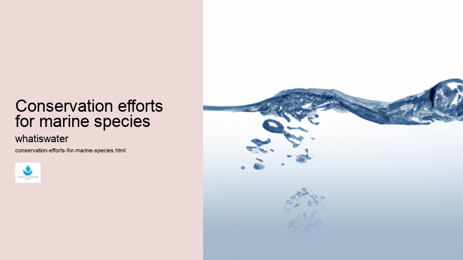
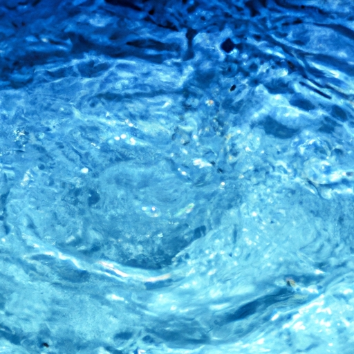

Hydrological Cycle
Hydrological Cycle
Evaporation and transpiration
Condensation and cloud formation
Precipitation and rain patterns
Surface runoff and river systems
Groundwater flow and aquifers
Snowmelt and glacial processes
Water storage in oceans lakes and reservoirs
Soil moisture and infiltration
Water balance and budgeting
Human impact on the hydrological cycle
Marine Ecosystems
Marine Ecosystems
Coral reefs and their biodiversity
Mangrove forests as coastal protectors
Ocean currents and climate regulation
Deepsea habitats and extremophiles
Intertidal zones and estuarine ecosystems
Marine food webs and trophic levels
Freshwater Ecosystems
Freshwater Ecosystems
Conservation efforts for marine species
Marine biogeochemical cycles
Impact of global warming on oceans
Water Resource Management
Water Resource Management
Rivers streams and creeks ecosystems
Lakes ponds wetlands habitats
Biodiversity in freshwater environments
Aquatic plants role in oxygenation
Freshwater fish species diversity
Invasive species impact on freshwater systems
Pollution threats to freshwater sources
Conservation strategies for freshwater biomes
Role of wetlands in flood control
Importance of riparian buffers
Cultural Significance of Water
Cultural Significance of Water
Sustainable water use practices
Desalination technologies for fresh water supply
Wastewater treatment processes
Rainwater harvesting techniques
Management of water during drought conditions
Transboundary water resource politics
Infrastructure for water distribution
Agricultural irrigation efficiency
Urban water demand management
Impact of climate change on water resources
About Us
Contact Us

Conservation efforts for marine species
Rainwater Harvesting
Conservation efforts for marine species are an essential component of environmental stewardship, aimed at protecting the vast array of life that inhabits our oceans. The ocean covers more than 70% of Earth's surface, and it is home to a rich biodiversity that includes everything from microscopic plankton to the largest animals on the planet. However, human activities have placed many marine species under threat, necessitating urgent and effective conservation measures.
One major threat to marine life is overfishing, which depletes fish stocks faster than they can replenish naturally.
Groundwater
This not only affects the targeted species but also disrupts the complex food webs within marine ecosystems.
Water Rights
To combat this, sustainable fishing practices must be promoted alongside strict regulation and enforcement of fishing quotas. In some areas, establishing no-take zones or marine protected areas (MPAs) has proven successful in allowing fish populations to recover.
Another significant challenge is habitat destruction caused by coastal development, pollution, and activities such as bottom trawling.
Conservation efforts for marine species - Water Scarcity
Water Rights
Water Scarcity
Virtual Water
Groundwater
Water Pollution
Coral reefs, mangroves, and seagrass beds are particularly vulnerable; these habitats support a high diversity of marine life but are being lost at alarming rates. Protecting these critical areas through legislation and promoting eco-friendly coastal development can help mitigate habitat loss.
Climate change also poses a grave risk to oceanic ecosystems due to rising sea temperatures, acidification resulting from increased carbon dioxide absorption by seawater, and sea-level rise.
Virtual Water
These changes threaten coral reef survival through bleaching events and may force species migrations that could disrupt existing ecological balances. Addressing climate change requires global collaboration to reduce greenhouse gas emissions and improve resilience among marine communities.
Pollution is yet another issue facing marine environments; plastics have become notorious for their persistence in the ocean and their harmful effects on wildlife through ingestion or entanglement. Reducing plastic use and improving waste management systems worldwide can drastically cut down the amount of plastic entering our seas.
Education plays a pivotal role in conservation efforts as well—informing public consciousness about the importance of healthy oceans ensures continued support for policies safeguarding marine habitats. Citizen science programs involving local communities in data collection build awareness while contributing valuable information for scientific research.
Finally, international cooperation remains crucial since many marine species migrate across boundaries where different regulations may apply. Agreements such as the Convention on International Trade in Endangered Species (CITES) aim to prevent unsustainable trade practices that endanger aquatic fauna.
In conclusion, conserving our oceans' biodiversity demands multifaceted strategies encompassing sustainable resource management, habitat protection, climate action plans against pollution sources plus comprehensive education initiatives fostered by strong intergovernmental partnerships—these steps together create resilient pathways toward securing a vibrant future both beneath waves above water's edge alike thereby ensuring precious sea dwellers continue thriving generations come.

Water Scarcity
Hydrological Cycle
Marine biogeochemical cycles
Check our other pages :
Conservation efforts for marine species
Rainwater harvesting techniques
Sustainable water use practices
Frequently Asked Questions
What are the most effective conservation strategies for protecting marine species?
The most effective conservation strategies for protecting marine species include the establishment of Marine Protected Areas (MPAs) that restrict human activities to allow ecosystems to recover, sustainable fisheries management to prevent overfishing and bycatch, and habitat restoration efforts to rebuild coral reefs, mangroves, and other critical habitats. Additionally, international agreements like CITES help regulate trade in endangered species, while local community involvement and education programs ensure long-term success by fostering a culture of stewardship.
How do climate change and ocean acidification impact marine species conservation?
Climate change leads to rising sea temperatures which can cause coral bleaching and alter distribution of marine life. Ocean acidification, resulting from increased CO2 absorption, reduces the availability of carbonate ions needed by many organisms for shell and skeleton building. Conservation efforts must therefore also address greenhouse gas emissions reduction while developing adaptive strategies such as assisted migration or selective breeding for resilience in vulnerable populations.
What role do individuals play in the conservation of marine species?
Individuals can play a significant role in the conservation of marine species through various actions including reducing their carbon footprint to mitigate climate change impacts; supporting sustainable seafood choices; participating in beach cleanups to reduce pollution; advocating for protective legislation; contributing to citizen science projects that monitor marine life; and donating or volunteering with organizations dedicated to ocean conservation. By making informed decisions and spreading awareness about the importance of healthy oceans, individuals collectively contribute towards preserving marine biodiversity.